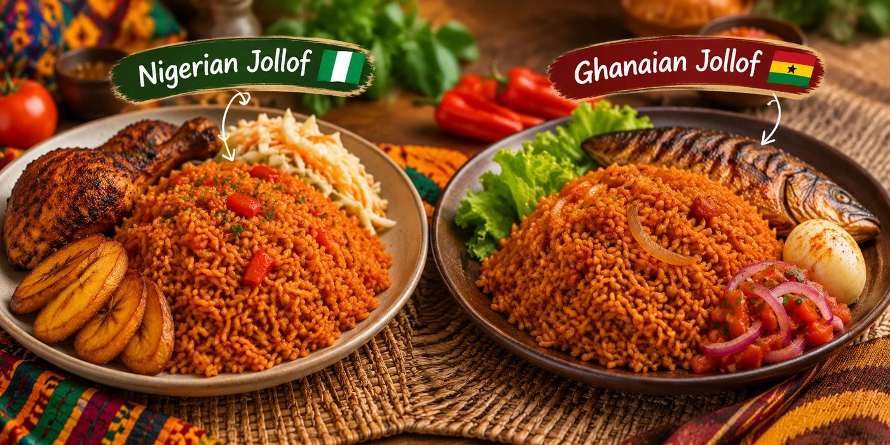

Orientation
Jollof changes across borders — and kitchens. Here you will study the commonly encountered styles of Nigerian and Ghanaian Jollof side by side, then meet related traditions from Senegal and The Gambia.
Why it matters: These two traditions are the ones you will compare on page 2.6.
- As you read, ask: what do these traditions share, and where do they differ — in cultural context, ingredients or preparation practices?
- You will use these observations on page 2.6.
Nigerian and Ghanaian Jollof
- the colour and grain of the rice on each plate
- what each is served with — chicken, fried plantain and salad on the Nigerian plate; fried fish and salad on the Ghanaian plate

Nigerian Jollof
Ingredients
Long-grain parboiled rice, fresh tomatoes, red bell peppers, hot peppers, tomato paste, onions, vegetable oil, garlic, ginger, thyme, curry powder, stock and other seasonings.
Preparation
Rice cooked in a seasoned tomato and pepper mixture. Party Jollof is valued for a smoky aroma and flavour that can develop through controlled heat and slight caramelization at the bottom of the pot.
Cultural context & serving
Party Jollof is linked to celebrations, weddings, parties and large gatherings. Commonly served with fried plantain, chicken, beef, fish, moi moi or salad.
Ghanaian Jollof
Ingredients
Rice (including long-grain or aromatic varieties), fresh tomatoes and tomato paste, onions, red bell peppers, hot peppers, vegetable oil, garlic, ginger, curry powder, thyme and other seasonings, stock or water.
Preparation
Rice cooked in a seasoned tomato and pepper-based sauce. Some cooks prefer aromatic varieties such as jasmine or basmati, and some prefer a more aromatic, richly seasoned preparation.
Cultural context & serving
Popular at celebrations, parties and family gatherings. Commonly served with chicken, fried fish, kelewele, fried plantain, salad and shito.
Not every household in either country cooks Jollof the same way. These are commonly encountered styles, not fixed rules.
Related traditions
Ceebu jën (thieboudienne)
SenegalRice (often broken rice), fish, tomatoes or tomato concentrate, onions, carrots, cabbage and cassava cooked together. Closely linked to Jollof’s history, but a distinct Senegalese dish with its own identity.
Benachin
The GambiaCommonly translated as “one pot”: rice cooked together with tomatoes, onions, peppers, fish or meat, vegetables and seasonings.
Other interpretations
Across the regionJollof-style dishes are also found in Sierra Leone, Liberia and Côte d’Ivoire. Riz gras, a tomato-based rice dish in some Francophone communities, shares features but is not automatically identical.
Quick check: reading the traditions
Key takeaways
- Nigerian and Ghanaian Jollof share the defining tomato-and-pepper method.
- They commonly differ in rice variety, flavour emphasis, preparation style and accompaniments.
- Senegal’s ceebu jën and Gambian benachin are related one-pot rice traditions with their own identities.